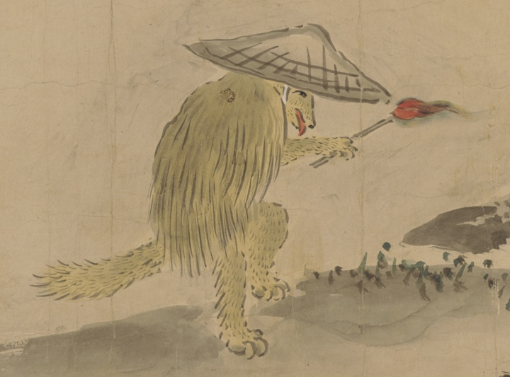

狐；キツネ，動物；ドウブツ，松明；タイマツ，簔笠；ミノカサ

簔笠をまとった狐が松明を持って歩いている。
著作者：英一蝶／出典：親書誌：U426_nichibunken_0449：妖怪四季風俗絵巻／日付：2019／資源識別子：U426_nichibunken_0449_0001_0012
Copyright (c)2010- International Research Center for Japanese Studies, Kyoto, Japan. All rights reserved.